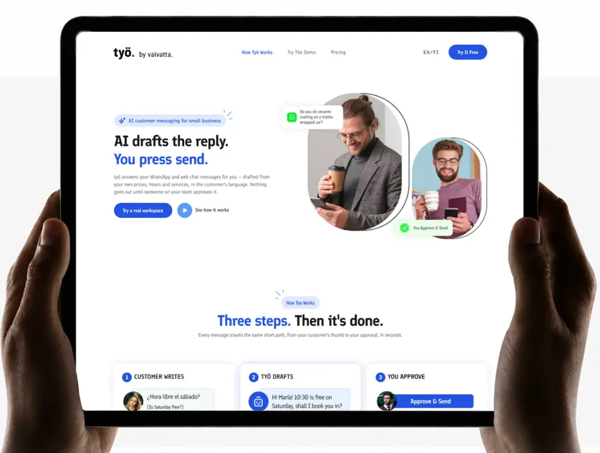

UX/UI Case Study
työ
AI customer messaging redesign.

This project page is now part of the portfolio site structure. I’m preserving the visual direction and will replace this compact version with the full case-study content from the original Claude artifact as it is recovered.